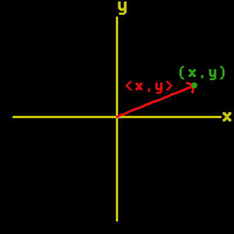

... Pacman Code ...
... Pacman Code ...
Vectors
Vectors are useful in storing information like position and velocity. By the end of this section we'll have a vector class that we can use not only in this game, but any game we write that needs 2D vectors.
A vector is something that describes both magnitude and direction. Both of those are necessary in describing a vector. In order to illustrate this idea imagine that you live in a city with a grid-based system. You're located at point A and you're trying to get to point B. You're new in town so you stop somebody on the street and ask the how to get to point B. The person tells you that you need to go 3 blocks East, then 2 blocks South. The person gave you two sets of information and each set of information contained a distance and a direction. One set was 3 blocks East, and the other set was 2 blocks South. This is all a vector is, it's really that simple. In this case the person gave you two vectors to follow. Notice that both pieces of each vector are necessary in order for you to reach your destination. If the person had just told you to go three blocks, then two blocks, you'd naturally want to know in which direction you should travel those distances. Likewise, if he had told you to go East, then South, you'd want to know how far to travel in each direction. Vectors require both a magnitude (or length) and a direction. You should also notice that the order in which he gave you the directions doesn't matter. He could have just as easily told you to go 2 blocks South first, then 3 blocks East. He could have also sent you in all sorts of directions before reaching your destination, so you can see that there are actually an infinite number of paths to travel from A to B.
Vector Arithmetic
It would have been a lot easier if you could just go straight to point B cutting across all of the blocks. This is always the shortest path and usually the one we're most interested in. But this vector isn't purely East and it isn't purely South. It's a combination of both of these directions. If we could use shorthand to describe this vector it would be 3E + 2S for 3 blocks East and 2 blocks South. Don't let the addition symbol confuse you, this isn't like adding 2 + 2 where we get a single result. We can add vectors together as we'll see below, but we can't add orthogonal directions such as East and South so we keep them separated with the addition symbol. We can add same directions together like 3N + 5N = 8N and if the directions are opposite each other then we can add them together as well like 4N + 6S = 2S. Adding opposite directions is basically subtraction. We don't even need special symbols for South and West since South = -North and West = -East. Then it makes more sense how we got the previous result if we write it as 4N - 6N = -2N.
Before we continue with this discussion let's change our coordinate system. It made sense to use North and South directions when introducting the concept of vectors with the map example above. But we can use any coordinate system we want so let's use the Cartesian coordinate system since that's the one most people are familiar with and the one we'll use in the game. The Cartesian coordinate system is just the x and y coordinate system. You can define any point by using any combination of x and y pairs. Points are also called scalar quantities and we'll write them within parenthesis like (x, y). We'll use a similar notation when writing our vectors except we'll use angle brackets like this: <x, y>. In both cases the x value will always go first. . Hopefully the image on the right will make this notation clear. Adding and subtracting vectors is really easy. All we have to do is add like directions together. For example, <4, 8> + <2, 3> = <6, 11>. For subtracting you just subtract the two numbers. You can also lengthen or shrink a vector by multiplying it by a scalar. For example, 5 * <2, 6> = <10, 30>. In order to shrink the vector the scalar should be between the values of 0 and 1.
Vector2D Class
This is the python code we'll need in order to deal with vectors. All we need to do to make a vector is pass in an x and a y value. Those values default to 0, so if you don't pass anything in you'll get a vector with a 0 length. The toTuple method is useful for when we need to convert our vector into a tuple. There are two types of magnitude methods here. The first one gets the actual magnitude which requires a square root function. This is why we imported the math package. It's good to have this, but we won't really use it in our game. Instead we'll make use of the magnitudeSquared method. This is the same as the magnitude method, except we don't need to take a square root. We really want to avoid taking the square root since it's a really expensive method. In our case it's also just uneccessary since all we're going to need the magnitude for is comparing distances. If all you need to do is compare distances, then you don't need to take the square root sine if m > n, then m2 > n2. The rest of the methods allow us to add, subtract, multiply, and divide Vector2D objects. There's a lot more methods we could add that relate to vectors like taking the dot product, normalizing, and so on. However, this is all we'll need for Pacman so I'm not including those other ones, but go ahead and write as many as you like if you're feeling inspired.
import math
class Vector2D(object):
def __init__(self, x, y):
self.x = x[0]
self.y = y[0]
def toTuple(self):
return (self.x, self.y)
def magnitude(self):
return math.sqrt(self.x**2 + self.y**2)
def magnitudeSquared(self):
return self.x**2 + self.y**2
def __add__(self, rhs):
return Vector2D(self.x + rhs.x, self.y + rhs.y)
def __sub__(self, rhs):
return Vector2D(self.x - rhs.x, self.y - rhs.y)
def __neg__(self, rhs):
return Vector2D(-self.x, -self.y)
def __mul__(self, scalar):
return Vector2D(self.x * scalar, self.y * scalar)
def __div__(self, scalar):
return Vector2D(self.x / scalar, self.y / scalar)